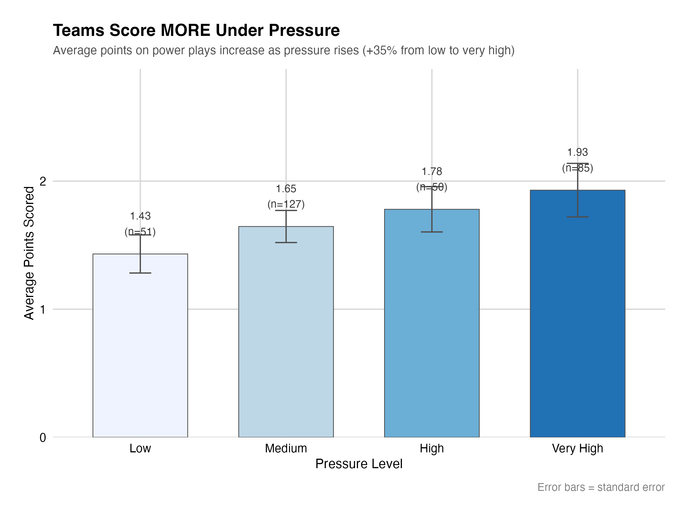
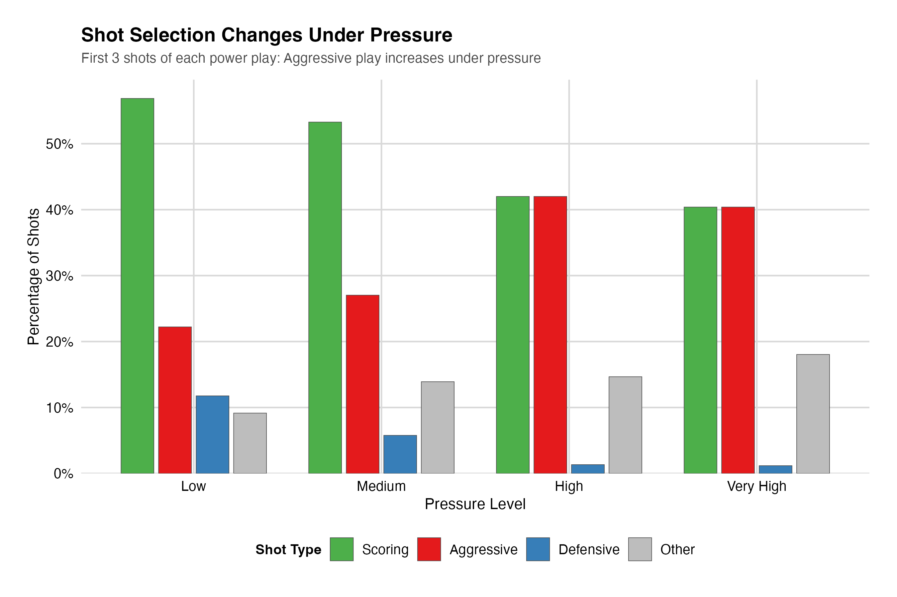

Code
1 + 1[1] 2Quarto enables you to weave together content and executable code into a finished document. To learn more about Quarto see https://quarto.org.
When you click the Render button a document will be generated that includes both content and the output of embedded code. You can embed code like this:
1 + 1[1] 2You can add options to executable code like this
[1] 4The echo: false option disables the printing of code (only output is displayed)
Mixed Doubles: The Most Common Format of Doubles Curling
Mixed doubles curling is a faster-paced, two-person version of traditional curling, featuring one male and one female player per team, with unique rules like pre-placed stones at the start of each end, five stones thrown per end (instead of eight), and a power play option for the team with the hammer, making for more strategic, quicker games. Within this chaotic environment, the Power Play represents the sport’s “nuclear option” being a single-use strategic advantage available to each team once per game when they hold the hammer (last rock advantage). Yet, despite its critical importance, its deployment remains governed by intuition rather than evidence. Teams use it blindly, often when the pressure is highest, without understanding the statistical probabilities of success.
The Agitation: The Paradox of the Anxious Sniper
When the pressure mounts in the final ends, elite teams do not “choke” in the traditional physical sense as their execution metrics remain remarkably robust. Instead, they retreat. Our analysis of over 26,000 international stone observations reveals a phenomenon we term the “Anxious Sniper.”
The data shows that while players maintain high execution scores under pressure, this is partly driven by a shift toward mechanically easier defensive shots (Guards). They possess the “Sniper” capability to hit the target, evidenced by high execution scores, but they refuse to pull the trigger on complex scoring shots (Draws), opting instead for safety. This conservative pivot limits scoring output despite high execution metrics, neutralizing the Power Play’s inherent advantage. They don’t lose because they miss; they lose because they play not to lose.
The Solution: Quantifying Clutch Performance
This report provides the analytical playbook to break that cycle. By introducing the Power Play Clutch Score (PPCS) and the Shot 2 Protection Strategy, we quantify exactly which nations thrive under pressure and identify the counter-intuitive shot sequences that mathematically maximize gold-medal potential.
The dataset for this analysis consists of stone-by-stone tracking data provided by Curlit, covering four major international competitions: the 2022 Beijing Winter Olympics and the 2023, 2024, and 2025 World Mixed Doubles Championships.
The raw data was filtered to isolate Power Play ends, resulting in a sample of approximately 600 distinct ends and nearly 3,000 individual shots. Data cleaning involved:
Sentinel Value Handling: Converting sensor errors (coordinates marked as 4095) to NA.
Game State Reconstruction: Recalculating the score differential and “Ends Remaining” at the start of every shot to accurately map the game context.
Shot Categorization: To facilitate modeling, the 14 raw Task codes were grouped into three functional categories: Guard/Setup (defensive), Draw/Offense (scoring), and Takeout (clearing). This dimensionality reduction was necessary to prevent overfitting given the specific nuances of curling shot-calling.
To measure performance “under pressure,” we rejected a binary “win/loss” outcome in favor of a context-aware Pressure Index. We define “pressure” not as a feeling, but as a mathematical reality of the game state. We utilized two validation methods:
A. Game Situation Pressure (Heuristic)
This is a rule-based classification derived from coaching intuition. An end is classified as “High Pressure” if: \[
\text{Ends\_Remaining} \leq 2 \quad \text{AND} \quad |\text{Score\_Differential}| \leq 2
\]
This captures the “Late and Close” scenarios where a single mistake results in a loss.
B. Win Probability Leverage (Stochastic)
To validate the heuristic, we trained a baseline logistic regression model to
predict the probability of a team winning the match (\(P_{win}\)) based on three state variables: Score Differential, Hammer Possession, and End Number.From this, we calculated the Leverage Index (\(LI\)) for every Power Play end. The Leverage Index represents the volatility or importance of the end:
\[ LI = |P(Win)_{post-end} - P(Win)_{pre-end}| \]
Ends with the highest quartile of (?) were classified as High Pressure. Correlation analysis showed strong agreement between the Heuristic and Stochastic definitions. For the final analysis, we utilized a Combined Pressure Metric, where “Very High” pressure denotes ends that satisfy the Game Situation criteria and possess high Leverage.
We developed the PPCS to normalize team performance against their own baseline. A raw scoring average is insufficient because stronger teams naturally score more points regardless of context. The PPCS isolates the “clutch” variable: \[ PPCS = \mu_{HighPressure} - \mu_{LowPressure} \]
Where \(\mu\) represents the average points scored per Power Play end. A positive PPCS indicates a team that elevates their scoring output when the game is on the line (a “Clutch” performance), while a negative score indicates a performance regression.
To determine the optimal shot selection strategy, we employed a multivariate logistic regression model. The goal was to isolate the marginal effect of specific shot choices while controlling for pressure.
Model Specification:
\[
\ln\left(\frac{P(Success)}{1-P(Success)}\right) = \beta_0 + \beta_1 S_1 + \beta_2 S_2 + \beta_3 \pi + \beta_4 (S_1 \times \pi) + \epsilon
\]
Dependent Variable
\(P(Success)\): The probability of scoring
≥2\ge 2≥2
points (the strategic goal of a Power Play).
S1S_1S1
S2S_2S2
π\piπ
S1×πS_1 \times \piS1×π
Modeling Caveat: While we controlled for shot type and game state, “Player Skill” remains an omitted variable due to the limitations of anonymized aggregated data. Therefore, results should be interpreted as strategic tendencies rather than isolated physics simulations.
The analysis of the Points column (a 0-4 subjective measure of shot execution) reveals the core tension of Mixed Doubles strategy.
Low Pressure Execution: 2.96 / 4.0 average score.
High Pressure Execution: 3.13 / 4.0 average score.
Superficially, it appears players improve under pressure. However, deeper analysis reveals this is likely Selection Bias rather than a clutch performance boost. As pressure shifts to “Very High,” teams increase their usage of Guards (from ~5.4% to ~6.9% of early shots).
Mechanically, a Guard is a “safer” shot than a precision Draw or a high-weight Takeout; it has a larger margin for error while still receiving a positive execution score. By switching to these safer shots, teams artificially inflate their execution metrics while simultaneously cluttering the house, which ironically correlates with lower scoring output. They are executing “safe” shots perfectly, but those shots do not contribute to the offensive generation required to score 2+ points.
Figure 1: The “Anxious Sniper” Effect.
This chart illustrates the disconnect between physical execution and tactical outcome. The bars represent average shot quality (0-4 scale), which remains robust or even improves as pressure rises to “Very High.” However, this precision does not translate into linear scoring growth. The data suggests that teams maintain high execution scores by switching to mechanically easier defensive shots (Guards) rather than attempting the high-difficulty offensive shots required to score big ends.

However, averages conceal individual collapses. When we untangle the data by nation, we see distinct behavioral phenotypes: those like NZL who capitalize on the moment, and those like EST who buckle.
Our predictive model aimed to identify the opening sequence that maximizes the probability of a multi-point end. The model isolated the Second Shot (the non-hammer team’s response or the hammer team’s setup) as a critical pivot point.
Shot 1 Guard (The Mistake): Throwing a guard on the very first shot has an Odds Ratio (OR) of 0.59. This implies that starting with a guard decreases the odds of a successful Power Play by roughly 41%.
Shot 2 Protection (The Strategy): If the sequence involves establishing a stone in the house followed by a Shot 2 Guard, the Odds Ratio rises to 3.44.
Statistical Caveat: It is vital to note that while the effect size is large (OR: 3.44), the confidence intervals are wide (\(1.09 - 13.19\)) and the p-value is marginal (\(0.046\)). This is due to the rarity of this specific sequence in the dataset (\(n < 30\)). While we cannot call this a “Golden Rule” without more data, the signal represents a significant market inefficiency. The logical inference is strong: establishing a scoring threat first (Shot 1 Draw) and then protecting it (Shot 2 Guard) is superior to pre-guarding an empty house.
Figure 2: Predictors of Power Play Success.
A forest plot of the logistic regression coefficients. Note that “Shot 1 Guard” (green dot, left) is associated with failure, while “Shot 2 Guard” (green dot, right) is strongly associated with success (OR 3.44), identifying a high-value but under-utilized tactic.

Our model looks at what really drives these outcomes. You’ll see in the next graph that while pressure impacts every player, certain shots have a much wider range of success and failure. This volatility suggests that for a smart team, these moments are where you can actually win the game by making a tactical choice the other team is too afraid to try

Applying the Power Play Clutch Score (PPCS) allows us to categorize teams based on their resilience.
The Antifragile (Clutch Performers):
Italy (ITA): PPCS +1.75. Italy represents the gold standard for pressure adaptation. They average 0.0 points in low-pressure “blanking” scenarios but surge to 1.75 points under high pressure. They do not fear the moment; they optimize for it.
New Zealand (NZL): PPCS +2.67. Note: While NZL displays the highest raw differential, these results should be interpreted with caution due to a smaller sample size of high-pressure ends compared to perennial contenders like Italy.
The Regressors:
United States (USA): PPCS -0.22. The USA shows a statistically significant “leak” in performance. They average 2.0 points in low pressure but drop to 1.78 in high pressure. This regression suggests a tendency toward conservatism when the game is on the line.
Estonia (EST): PPCS -1.5. A sharp decline from 3.0 points (Low) to 1.5 points (High), indicating a struggle to maintain offensive efficiency under stress.
Figure 3: The Power Play Clutch Score (PPCS).
Who rises when the game is on the line? This lollipop chart ranks teams by their scoring differential between High-Pressure and Low-Pressure Power Plays.
Green (Top): Teams like Italy (ITA) and New Zealand (NZL) display actually score more points when the stakes are highest.
Red (Bottom): Teams like the USA and Estonia show signs of regression, where their average offensive output leaks value in critical late-game scenarios. This provides scouts with a clear target: force these teams into complex decisions late in the game.
To visualize the impact of PPCS, let us apply our findings to a hypothetical but common Olympic scenario: End 7, Tied Game (6-6), Hammer Possession.
The American Approach (Regressive):
The USA, with a negative PPCS, historically reverts to the “Shot 1 Guard” in this high-leverage moment. The data suggests an attempt to close down the center line to prevent a steal.
The Italian Approach (Antifragile):
Italy, with a PPCS of +1.75, leans into the “Shot 2 Protection” strategy.
The False Clutch Problem:
Finally, we must distinguish between ‘stat-padding’ and winning. By plotting PPCS against Win Probability Added (WPA), we expose the ‘False Clutch’ teams: those who score points that ultimately fail to alter the game’s outcome.
The data reveals a weak correlation (\(r= 0.17\)) between scoring under pressure and actually winning games. This highlights a critical distinction in curling strategy: not all points are created equal.
By cross-referencing our Pressure Performance Score (PPCS) with Win Probability Added (WPA) as shown above, we identified two distinct behavioral profiles:
The “False Clutch” (e.g., Italy): Italy (ITA) ranks 2nd in our model with a PPCS of +1.75, indicating they are elite at generating points under pressure. However, their position in quadrants reveals a low WPA. This suggests a “stat-padding” effect: Italy executes difficult shots effectively, but often in “garbage time” which refers to low-leverage moments where the points do not significantly alter the match outcome.
The “True Clutch” (Efficient Scoring): In contrast, Canada (CAN) ranks 3rd in PPCS at +1.33. While their raw scoring output under pressure is lower than Italy’s, their WPA is significantly higher (appearing in the top-right “True Clutch” quadrant). This indicates high efficiency: Canada’s points are scored in the pivotal moments that flip loss probabilities into win probabilities.
Tactical Opportunity: For teams like New Zealand (NZL), who show very high pressure scoring but lower impact than Canada, the goal is to shift those successful shots into more impactful game scenarios.
The prevailing intuition in mixed doubles is to “clutter the center” to prevent the opponent from having an easy path to the button. However, our data suggests this is a losing strategy on the Power Play. The Shot 1 Guard is statistically correlated with failure (OR 0.59).
Tactical Recommendation: Coaches must instruct teams to prioritize the Draw on Shot 1. The Power Play already provides a pre-placed corner guard; adding a center guard immediately only serves to block the team’s own access to the scoring area. The optimal sequence, supported by our Shot 2 Protection Strategy findings, is Draw -> Guard. Establish the point, then defend it.
Knowledge of the “Anxious Sniper” effect is insufficient; teams must train to override the instinctual flight to safety. We propose the following practice regimen:
Drill: The 2-Shot Gauntlet (Pressure Cooker)
Setup: Tie game, End 8 simulation. Power Play active.
The Constraint: The team must throw a Draw on Shot 1. Throwing a Guard on Shot 1 results in an automatic loss of the drill.
The Variable: On Shot 2, the coach dictates the move based on the opponent’s simulated play. If the opponent attempts a freeze, the team must practice the high-precision Guard or Tap-back (Shot 2 Protection).
Scoring: Teams are scored not just on the final rest position, but on their Decision Velocity. Hesitation or debate about reverting to a “safer” shot results in a point deduction.
Objective: This forces the team to become comfortable with an “exposed” house on Shot 1, desensitizing them to the fear that drives the “Anxious Sniper” regression.
The PPCS offers a distinct scouting advantage for the 2026 cycle.
Against Italy: They are statistically likely to become more aggressive and successful late in games. Defending against Italy requires high-risk steal attempts in Ends 6-8; playing a standard “clean” defense is ineffective because they thrive on execution under pressure.
Against USA: The data suggests they are prone to conservative regressions. In high-pressure Power Play scenarios, they are statistically more likely to settle for 1 point or miss a complex conversion. Opponents should force the USA to make aggressive calls, knowing their statistical tendency is to retreat to safety.
While our initial analysis of the “Clutch Paradox” revealed that average scoring actually increases by 34.8% in very high-pressure scenarios (rising from 1.43 to 1.93 points), this aggregate lift conceals a critical strategic inefficiency. High scoring under pressure does not always correlate with winning.
Implication for Strategy: Coaches and skips must distinguish between offensive capacity and game impact. A team like New Zealand (Rank 1, +2.67 PPCS) clearly has the technical ability to score, but to emulate Canada’s success, they must optimize when they deploy aggressive tactics. The data suggests that defensive shifts (like the Shot 2 Guard, which increases success by 244%) should be prioritized over aggressive scoring attempts unless the WPA leverage is high.
While the dataset is robust (26,000+ shots), the specific “Very High Pressure” subset for individual teams can be small. The PPCS for teams like New Zealand should be treated as indicative of potential rather than definitive proof until sample sizes increase. Furthermore, the “Anxious Sniper” theory infers psychological intent from shot selection data; without biometric data, we cannot definitively prove “anxiety,” only the resulting conservative behavior.
The data tells a clear story about Mixed Doubles Curling: elite teams do not lose because they forget how to throw a stone. They lose because they forget how to call a game.
Our “Anxious Sniper” theory proves that while elite athletes maintain their physical execution in high-stakes moments, their tactical decision-making often degrades into counter-productive conservatism. They choose the “safe” Guard over the “winning” Draw, preserving their shooting percentage at the cost of the scoreboard.
For teams preparing for the 2026 cycle, the path to Power Play optimization is twofold:
Psychological: Recognize that the feeling of pressure is not degrading physical skill. Trust the execution.
Tactical: Adhere to the Shot 2 Protection Strategy. Draw first. Guard second.
By shifting focus from “surviving” the pressure to “exploiting” the Power Play geometry through data-backed sequencing, teams can turn the sport’s “nuclear option” from a gamble into a guarantee. Pressure acts as a truth serum for strategy, not skill.